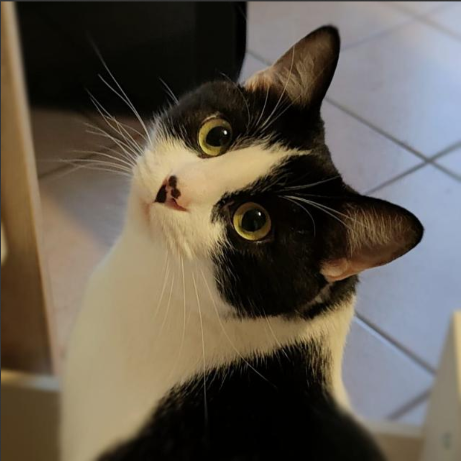

| Perchè ho scelto informatica? | Ho scelto informatica perchè fin da piccolo, il mondo dei videogiochi, il mondo dei computer e dell'informatica in generale mi hanno sempre appassionato e intrigato. Dalla possibilità di creare mondi virtuali che seguono le uniche regole dettate dal programmatore sin dal creare programmi in grado di soddisfare ogni tipo di esigenza, progetti, strumenti, e idee divulgati gratuitamente dall'enorme community per svilupparne una versione sempre migliore |
|---|---|
| Hobbies | Suono il pianoforte nel tempo libero, 0 aspettative |
| Sport | Ho una passione abbastanza forte le la palestra (sala pesi), sollevare ghisa allevia lo stress |
| Animali | Ho un gatto! (HOVER ME)  |